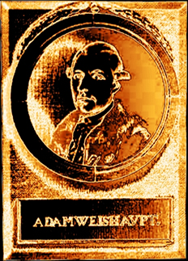

in honorem
|
Adam Weishaupt Greater Mysteries I Part 1 First degree May 1787
He, who is searching for salvation, comes here! We want to reconcile you with the world; we want to guide you to your felicitousness. We want to teach you the great art to feel enjoyment with all objects in the world and all happenings in life. Those things which are around you and which are the reason for your misfortune shall lose their ugliness. The ugly shall be pleasant to you, the small shall become the great, and the subject of your aversion shall turn into an admirable object. Wisdom is the only way to joy, to salvation, to blessedness. Come here! We want to teach you - wisdom. When you want to be a wise man then you shall know that men call everything onto which their admiration and institution are focused a purpose. Because there are existing endless purposes, the same number as our wishes and desires and that they often contradict themselves of that reason and that it is impossible to reach them all at the same time; that consequently not all are good and legitimate; that some could be higher, others could be lower, some could be tighter and others just generality; that to determine the goodness and value of the purpose, it must be a highest generality, therefore all the others, the higher and the lower purposes are just behaving as a method or even as a barricade; so then the confine purposes could stop being called purposes; that the true wisdom of men shall carrying this last generality and subordination itself; that our true wisdom and intellect have to be considered of monitoring the purposes which were so important until now, just to see as a method; and that consequently all pleasure and displeasure, the higher be decreased and the lower be increased. Our point of view and our location are therefore the source of our minor and major pleasure and contentment. To those reasons are our salvation and blessedness bounded, with them it increases or diminishes. No one as such a wise man alone could decide what in the world is really big or small, what is just or unjust, good or evil, ugly or beautiful, admirable or detestable. The one who can’t understand the subordination of the purposes, whereby all become one of the same purpose, his judgement is distorted, his admire foolish, his creations vain and unstable, his intellect insecure and he is in danger to fall into hands of misfortune evenly through that, that he wants to avoid it. His saving method is his ruin and his believed ruin is the method for saving him. As everybody else who never saw something more beautiful and greater in his life, the one who recognizes the beauty of his town as a Venus and the river which is floating through his neighbourhood as the widest sea. In the same way our visible impression carries our indolence in thinking for the judgement of the world and its parts, our ignorance and our short view. This highest and best purpose alone is the station onto which men go in order to overlook the world This station is the one which is revolving your actual giants into dwarfs, the objects which were disagreeable till now, representing in another, better property and connexions, changing your perception and therefore your covetousness; making the good to evil and the evil to good; taking off the ugly his mask, multiplying the pleasure and this till now so busy world turning into an Elysium. You have been looking throughout an allochromatic glass; you have been snatching at soap-bubbles, you were thinking that the hill, onto which the church of your village is standing, was the highest mountain on earth, because it was your highest point of view; because you stood at one unjustified place. Now rise here, onto the place here, where We stand and look out anew into the world – and astonish! A different, new, wonderful world! Your native country comes out as a grain of sand, Europe as the hill of a mole. Our great, earth-shattering, European affairs and businesses of mankind shrink down to the ant republic and business; being almost lost in the monstrous chain of space, like a drop of water in the world sea. See now your agony converting into joy, the great into the small, imperceptible and your hell into a heaven. This small, almost imperceptible one was it so, that made you care and restlessness? Was it that, that took your complete soul? This small one, and was it even the little ant-hill Europe, could move you to bring discord among yours? To awake romp, anger and storm inside your soul; and to withdraw heavenly cheerfulness? Miserable human, how little is that what you are angry about! And how great, how eternal is that what you treat unconcerned and carefree? – Climb so, if you can, higher and higher upwards to us. This climbing upward, this generalization of your point of view is the mountain or the great conductor to joy, and on which the chosen one soars up already here to deity, to felicitousness, because with every higher level, from the growing height, to uncover an always more to him before unknown land of joy and happiness down in the deep. This that seemed ugly, almost unbecoming from below, receives just from this height its proper proportion and symmetry, and when then in this upward and higher climbing finally the sun itself comes out only as a spark, so then what should become of you, your wishes and desires? O, then shame on you, of your proud, your imaginary highness and greatness! But there below you were sitting already your whole life and believed to be on summit. You have disgraced all that passed by below, being too lazy to tear yourself and to raise. You have disgraced us too, you miserable diminishing creature! That from here above, from the top of the tower where you never venture to climb upward, we announce you a marvellous view to a more beautiful land; calling us even morons and fanatics; laughing about our simplicity and our Inexperience, that we are sitting in our silent bed rooms besides our night lamps and selling hatched dreams as truths to the world, and decreasing the misfortune and disaster of men through an over stretched imagination. – Wake up from your slumber, encourage yourself, raise up to us; or, if you don’t want this, stop at least to disgrace the world. She is gods creation, and who blames and blasphemes it, he blames and blasphemes his and your creator. You don’t see the world of course as it is but only how it can be seen from your point of view with by your desires colored glass; and this standpoint is too lovely for you as that you would think to leave it. Encourage yourself anyway and we will show you the land where the ugly becomes the beauty and apparent disorder turns into regular conformity.
Maybe it is preferable to be a mite, maybe it is degradation being a human, if it could be possible that in this creation a stand could humiliate.
|
Copyright © 2003  All rights
reserved.
All rights
reserved.